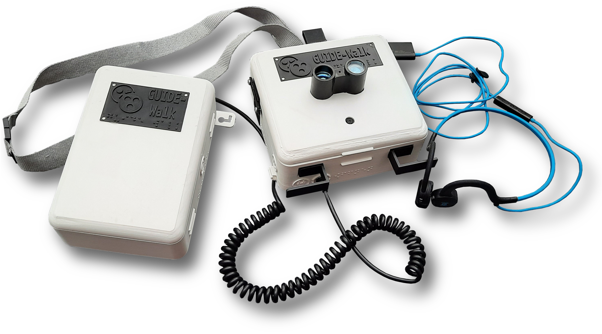

Die unterstützende Infrastruktur für Blinde und Sehbehinderte wird immer weiter ausgebaut: Bodenleitsysteme und Verkehrsampeln mit Audiosignalen sind für uns heutzutage selbstverständlich, trainierte Blindenhunde begleiten sehbehinderte Menschen in ihrem Alltag. Die neuartige Technologie der künstlichen Intelligenz (KI) kann hierbei helfen, spannende Technik zu kreieren, womit blinde Menschen selbstständiger werden und alleine unkompliziert durch die Stadt navigieren können.
GUIDE-Walk ist ein digitales, tragbares Assistenzsystem, welches blinde und sehbehinderte Menschen bei der Orientierung im Straßenverkehr unterstützen und deren Sicherheit verbessern soll. Mithilfe einer Kamera, eines Bewegungssensors und eines LiDARs nimmt das Gerät Bilder und Informationen von der Umgebung auf und verarbeitet diese. Die integrierte KI-Assistentin Gabrielle lernt, Hindernisse und Gefahren wie Autos, Passanten, Fahrräder und Ampeln zu erkennen und über den Kopfhörer den blinden Träger zu warnen.
Der GUIDE-Walk 2.0 ist der Nachfolger zu einem Prototyp, welcher letztes Jahr im Rahmen einer Jugend forscht-Projektarbeit entstanden ist.
